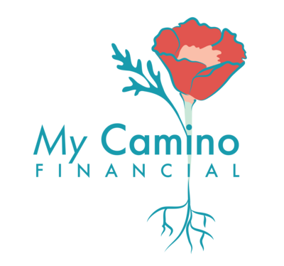

01


Logo
The stacked mark is primary. The horizontal lockup is for navigation bars and any space under 60px tall. The icon alone is for favicons, social avatars, and the footer, never as a substitute for the full name on a first impression.
See the logo typography study → for open questions on descriptor tracking and small size behavior.

Primary, stacked. Hero areas, decks, print. Minimum width 140px.
Horizontal lockup. Site nav at 40px tall. Minimum width 120px.
Icon, on color. Footer, avatars, favicon. Use the on-mark version over navy or coral.
Do
- Keep clear space equal to the height of the leaf on all four sides.
- Place the standard logo on cream, white, or pale blue gray.
- Place the on-mark icon on navy teal or coral.
- Scale proportionally, always.
Do not
- Recolor, outline, or add effects to the mark.
- Set the standard logo over photography or a busy field.
- Stretch, rotate, or crop the lockup.
- Rebuild the wordmark in a different typeface.